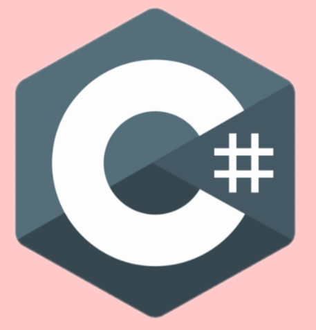

Introduction
Pronounced C-sharp (not C-hashtag), it is a programming language characterized by being multi-model that features strong typing, functional, declarative, imperative, generic, object-oriented and component-oriented disciplines.
It was created in 2000 by Microsoft as part of its .NET initiative. The free and open-source project is called Mono which develops a compiler and runtime for the language. C# is a programming languages which was designed for the Common Language Infrastructure (CLI).
C# was designed by Anders Hejlsberg, and Mads Torgersen is the leader of its development team. The most recent version is 8.0, which was released in 2019 alongside Visual Studio 2019 version 16.3
Reasons to use C#
- Type-safety:
Memory manipulation, which means the allocation and release of memory for a particular application currently working on. This will be helpful and time saving for developers who have to write codes for performing memory manipulation task activities. C# does this automatically for you; this behavior can be helpful in a memory leak and memory access. So, back to the discussion where we left for Type-safety, an unsafe keyword can be used to mark a block of code. This will easily bypass the Framework type type-safety checking. This behavior of C# makes a clear and precise edge over VB.NET
- Learning:
Comparing to other Programming languages (PL) learning C # would definitely be a snap. Easy to learn to compare to others. One thing is sure any PL would take sufficient time to learn and equally sufficient time to master but the point of concern is the language complexity to learn. uses of C# is syntactically similar to Java. Have a look at the below-mentioned scenario.
- Not Just Microsoft
Just Microsoft? Not any more……ECMA and MONO project is evidence that says in the favor of applications of C#. ECMA has been a standard publish. MONO a cross-platform application development choice for developers. Refer MONO PROJECT for more details.
Applecations C# can develop
- Windows client applications
- Windows libraries and components
- Native iOS and Android mobile apps
- Backend services
- Internet of Things (IoT) devices
- Artificial Intelligence and Machine learning
- Gaming consoles and gaming systems
- Video games
- java
- Python
- JavaScript
- Main page